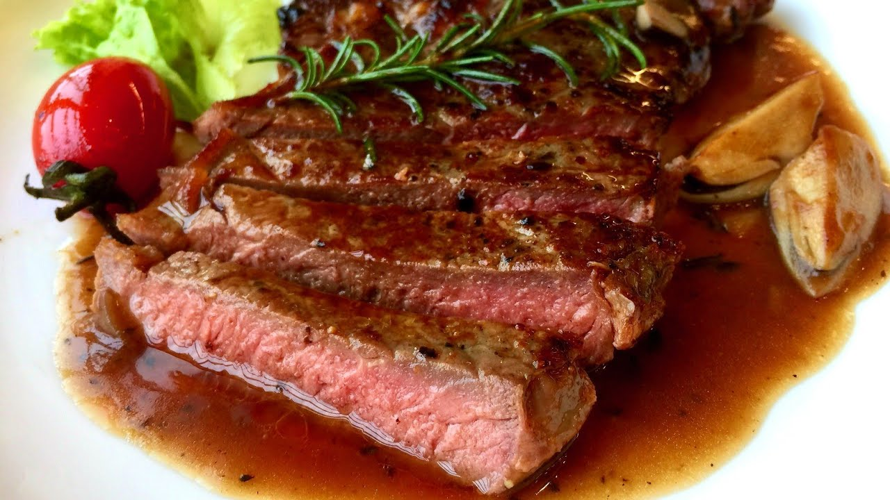

Beefsteak
Bít tết là 1 món ăn tuyệt vời bạn nên thử 1 lần trong đời

Nguyên liệu
- 2 miếng thịt bò ngon : 400 gram
- Dầu oliu : 45ml
- Rượu vang đỏ : 15 ml
- Muối và tiêu đen
- Khoai tây : 2 củ
- Trứng : 2 quả
- Tỏi : 1 củ
- Chanh : 1 quả
Phương pháp
- Rửa sạch thịt bò và cắt những phần mỡ, gân bò nếu có. Để miếng thịt ráo nước, dùng búa chuyên dụng hoặc dụng cụ tương tự để đập dập miếng bò. Giúp thịt bò mềm hơn sau khi nấu.
- Ép tỏi và gừng lấy nước, dùng hai muỗng ướp với thịt. Cho thêm một chút muối và tiêu đen để vừa ăn. Để trong vòng 30 phút cho thịt ngấm.
- Trong khi đợi thịt ướp, sơ chế và cắt khoai tây thành miếng vừa ăn, chiên vàng và để ra giấy thấm khô. Trứng nấu ốp la cho vừa chín tới.
- Cắt lát tỏi thành những miếng mỏng sau đó chiên cho vàng vừa phải.
- Để chảo lên bếp đợi nóng chảo thì cho dầu oliu vào và đặt thịt lên. Để trong vòng 1 phút rưỡi không lật và di chuyển thịt, thoảng ấn nhẹ để thịt nhanh khô hơn. Lật mặt còn lại và để 1 phút rưỡi tương tự.
- Tưới một chút nước cốt chanh và rượu vang lên mặt thịt sau đó bày ra đĩa.